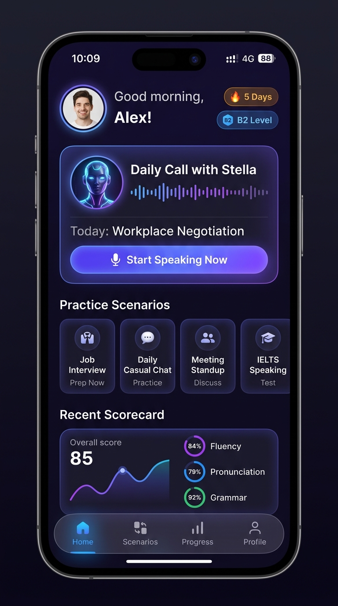
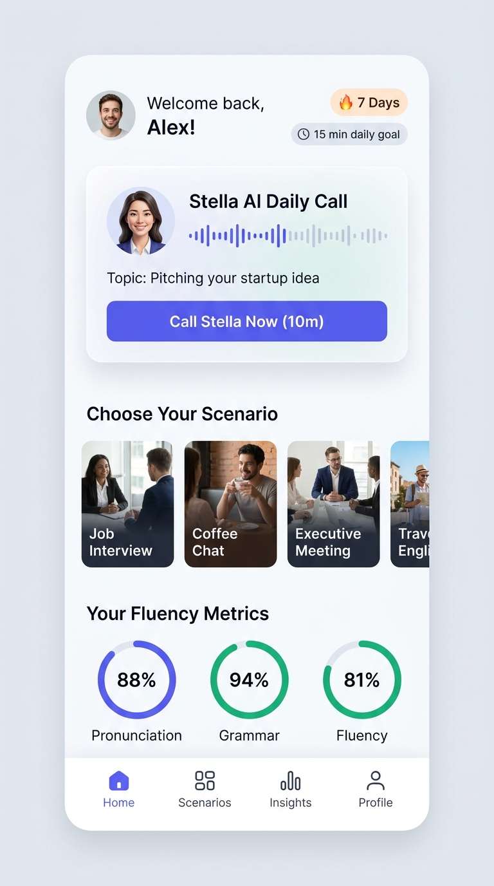

Comprehensive Specker.ai App Audit
Evaluating the current product experience against real user psychology and Nielsen Norman heuristics.
🧠 The Psychology of Speaking Anxiety (The "Wall of Hesitation")
Most language apps fail in spoken English because speaking is fundamentally vulnerable. In text apps, users have infinite time to think before tapping. In a voice app, an ESL learner faces "The Wall of Hesitation": fear of grammatical errors, fear of awkward silence, and the anxiety of not knowing how to start.
Too many vague choices on the home screen force users to hesitate rather than speak immediately.
No prominent streak loss-aversion or daily time goal on the home screen makes practice sporadic.
Scores tell users what they scored, but fail to provide an immediate 5-second phonetic drill to fix it.
📋 Heuristic Evaluation & Severity Matrix
| Heuristic | Current App Flaw | Severity | Redesign Intervention |
|---|---|---|---|
| Visibility of Status | Minutes balance and daily goal progress are hidden. | P1 (High) | Prominent top-bar status pill & circular habit ring. |
| Match System & World | Feels like browsing a static catalog rather than calling a human coach. | P1 (High) | Dynamic Stella Hero card with live waveform & audio presence. |
| Recognition vs Recall | No conversation starter or prompts shown before entering call. | P0 (Critical) | Pre-loaded "Topic of the Day" with prep time estimate. |
| Aesthetic & Minimalist | Competing visual banners without a single dominant CTA above fold. | P0 (Critical) | Clear 7-zone hierarchy anchored by primary glowing CTA. |
| Error Prevention & Feedback | Scorecards give passive numbers without actionable micro-drills. | P2 (Medium) | Surfacing 1 target mispronounced word with 1-tap IPA playback. |
The Home Screen Redesign
Engineered around behavioral science, atomic habits, and thumb-friendly mobile ergonomics.

Deep violet accents with glowing waveform indicators to establish an immersive, high-tech AI atmosphere.

Crisp slate-50 background, elevated cards, and high-contrast typography meeting full WCAG AA accessibility.
The 7-Zone Information Architecture Breakdown
User avatar, daily greeting, 🔥 7 Days Streak Pill for loss aversion, and CEFR level badge (B2 Level) for academic mastery.
Pulsing AI avatar, live waveform equalizer, pre-loaded topic ("Defending Ideas in Meetings"), and 1-tap call CTA with secondary schedule toggle.
Circular goal ring (9 / 12 mins spoken) with behavioral micro-copy: "Only 3 mins left to protect streak".
Horizontal category tabs (Career, Office, Social, IELTS) with card metadata: session length, difficulty tag, and 1-tap launch.
Surfaces yesterday's fluency score (85), 3-pillar breakdown (Pronunciation 79%, Grammar 92%, Pace 128 wpm), and 1 target phonetic audio drill.
Low-stakes 60-second tongue twister to break speaking inertia; bottom navigation anchored by elevated central quick-speak FAB.
Interactive Mobile Prototype
Experience the live call simulation, theme switcher, and instant scorecard modal.
Edge Cases & System Resilience
Senior product design accounts for failure states, first-time users, and edge moments.
Instead of an empty scorecard or generic categories, the Hero card displays: "Meet Stella: 3-Minute Fluency Diagnostic" with zero intimidation.
Never shame the user. A friendly recovery chip appears: "Streak frozen! Speak for 5 mins today to restore your 7-day momentum."
When free minutes deplete, the Hero button updates seamlessly to: "Unlock Unlimited Stella with Pro" without jarring modal interruptions.
If cellular connection degrades, the live voice wave pulses amber with micro-text: "Optimizing audio quality..." so the user never feels disconnected.
Business Impact & Measurement Plan
Validating design decisions through clear quantitative North Star metrics.
Reduced from 6s to < 2.5s via the pre-loaded Topic of the Day hero card.
Driven by streak loss aversion and the 12-min daily goal completion ring.
Converting passive scorecards into 1-tap phonetic audio practice.